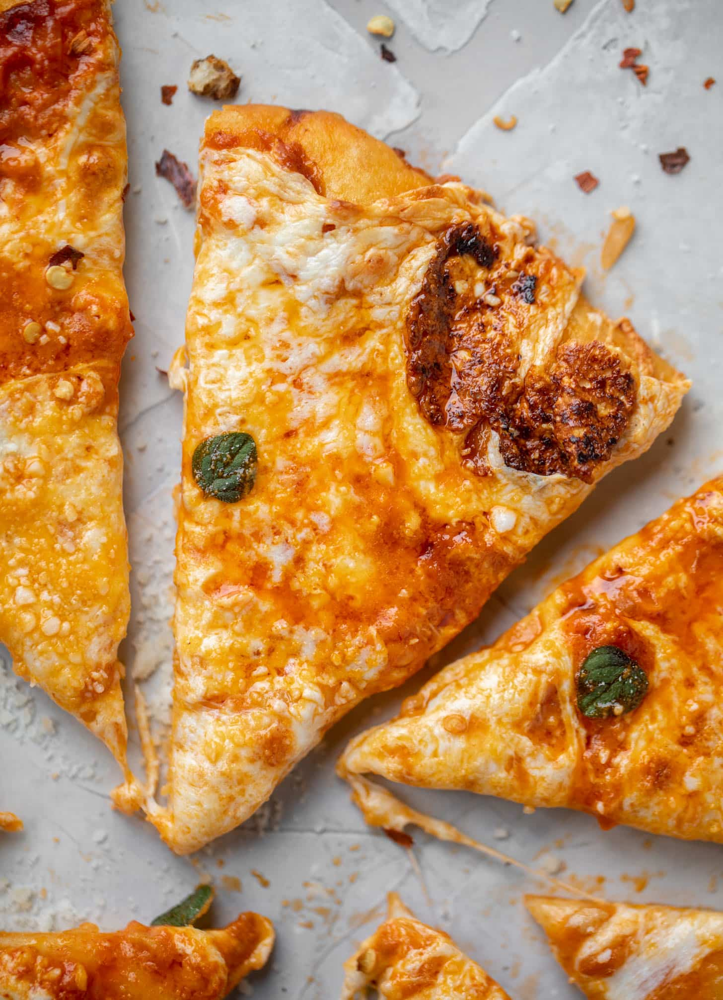

Vodka Pan Pizza

Description
In this vodka pan pizza, traditional margherita pizza is transformed by the addition of vodka sauce. Store bought dough and sauce will allow you to have pizza faster than delivery, start to finish.
Ingredients
- 1 pound prepared pizza dough
- 1/3 cup vodka sauce
- 1 (8 ounce) ball fresh mozzarella, sliced
- 1 ounce shredded Parmesan cheese
- 6 grape tomatoes, halves
- 3 basil leaves, sliced into thin ribbons
- 1/2 teaspoon garlic granules, optional
- 2 teaspoon olive oil, optional
Steps:
- Gather all ingredients. Preheat the oven to 425 degrees F (220 degrees C). Lightly grease a 12-inch cake pan.
- Stretch and roll out pizza dough and place in the prepared pan. Prick pizza dough with fork tines.
- Bake pizza dough in the preheated oven for 5 minutes. Remove pizza from the oven; spread vodka sauce on pizza to within 1/2 inch of the crust edge.
- Lay mozzarella slices on the pizza. Sprinkle with Parmesan.
- Bake for 15 minutes more. Remove and add tomato halves. Bake until pizza crust is golden, about 5 more minutes.
- Remove pizza from the oven; garnish with basil. If desired, add garlic granules to olive oil; brush along the exposed crust. Cut into 8 to 10 slices; serve immediately.